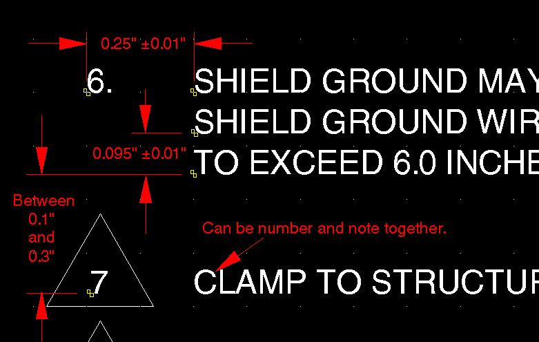

dxf2svg.svg.SvgNotes
dxf2svg.svg.SvgNotes
|
|||||||||||
| PREV CLASS NEXT CLASS | FRAMES NO FRAMES | ||||||||||
| SUMMARY: NESTED | FIELD | CONSTR | METHOD | DETAIL: FIELD | CONSTR | METHOD | ||||||||||
java.lang.Object
This class will generate the notes for a discreet series of illustration sheets. The sheets that belong to the same family will have any notes that are appropriate to those sheets included as pop-up text or tooltips when the user mouseovers the note number.
How It Works
This is the pattern for a note that SvgNotes recognizes:

If the generateNotes switch is used, the DXF
files are scoured for text on the layers NOTESENG, NOTESFRE and NOTENUMS.
The text is extracted, a determination of the ordering of multi-line text
is made as well as the number of the note. Once individual lines of text
have been isolated, they are stored in order ready for outputting via
SvgBuilder.addJavaScript(java.lang.String) method.
This class makes heavy use of the FigureSheetDatabase
to retrieve related sheets within a figure. To retain backward compatability
the FigureSheetDatabase will not be modified. This is
to maintain readability from the serialization/de-serialization process.
If the -db switch is not used a new database will be created or any existing database in the current directory will be opened read and modified as required. If the -db switch is used the path database specified will be used and modified as required.
It is assumed that the files in the current directory are related or that the existing database contains entries for the files being currently converted.
Each file that is added to the SvgNotes object will be checked for notes. If more
than one file contains notes (which is not allowed in the AG specification) the
behaviour is to over-write any previously collected notes completely. Another
behaviour modification is to stop searching each file if notes were already found on
one of the sheets that was added (see hasNotes()).
It is the responsibility of this class to mediate between the current file conversion and FigureSheetDatabase, to maintain all the notes for all the figures that are required for any figure and all of its sheets.
| Nested Class Summary | |
protected class |
SvgNotes.SheetMissingFromNoteCollectionException
This exception gets thrown if the list of files to be converted is missing entries for files that are listed as being sheets for the current figure in the database. |
protected class |
SvgNotes.SvgNoteString
This class represents a note string and its x, y location in AutoCAD space. |
| Constructor Summary | |
SvgNotes()
Default constructor. |
|
SvgNotes(java.util.Vector dxfFiles,
java.util.Hashtable figure)
Double argument constructor that takes a Vector of dxf file paths and a Hashtable where the sheet number is the Hashtable's key and the value is a Vector that is a record that contains boardnos, titles, spotcalls and the like. |
|
| Method Summary | |
void |
addSheet(java.lang.String file)
Adds the a figure family sheet member to this group of notes. |
boolean |
changeJavaScriptNoteArrayName(int language,
java.lang.String altName)
Allows external clients to change the name of the javascript arrays that are output. |
void |
changeNoteLayerName(int language,
java.lang.String layerName)
Allows the client to change the name of the layer to search for notes. |
protected void |
getCompiledNoteStrings(java.util.Vector noteStrings,
java.util.Vector indexNumbers)
Searches for the initial String of a note based on the note number. |
protected void |
getIndexNumbers(java.util.Vector src,
java.util.Vector dest)
Returns a Vector of all the index number SvgNoteStrings. |
boolean |
getNotes(SvgBuilder svgb,
java.lang.String fileName)
This call back method passes the name of the file being currently converted which acts like a signal to SvgNotes to call the SvgBuilder.addJavaScript(java.lang.String) method
if required. |
java.lang.String |
getNotesAsJavaScript()
Formats any notes into a form acceptable for use in the SVG's JavaScript functions. |
boolean |
hasNotes()
Returns true if notes were found on one of the sheets that this object represents. |
protected void |
init()
Allows multipule constructors to perform the same tasks that all SvgNotes require before performing the unique tasks required to set up the object to the specifications required by the constructor. |
boolean |
isMemberSheet(java.lang.String fileName)
Returns true if the file name argument is a member of this collection of sheets that these notes apply to. |
boolean |
isRelevantToConversion()
Returns true if this object was deemed to be relevant to the current conversion and false otherwise. |
protected void |
makeNoteStrings(int language,
java.util.Vector notes)
Takes the delimited data from the DXF file and converts them into SvgNotes.SvgNoteStrings.
|
protected void |
orderNotes(int language)
Takes a Vector of raw Strings that are the notes from the DXF and groups and orders them. |
protected void |
sortNoteStrings(int language,
java.util.Vector noteStrings)
This method sorts the individual note strings into their logical groupings. |
java.lang.String |
toString()
Returns this object as a String that specifies its class and its note contents. |
| Methods inherited from class java.lang.Object |
clone, equals, finalize, getClass, hashCode, notify, notifyAll, wait, wait, wait |
| Constructor Detail |
public SvgNotes(java.util.Vector dxfFiles,
java.util.Hashtable figure)
dxfFiles - List of all DXF files that the client want converted to SVG. If the
Vector of file names is null or empty then a call to isRelevantToConversion()
returns false and the constructor returns withoutfigure - Hashtable of all the sheet numbers versus the records of the sheet's info.
java.lang.NullPointerException - if the argument Hashtable is null.
java.lang.ClassCastException - if the Object stored as a value is not a Vector.public SvgNotes()
| Method Detail |
protected void init()
public boolean isRelevantToConversion()
Calling this method on an SvgNotes Object that was created with the default no argument constructor will always return true.
public void changeNoteLayerName(int language,
java.lang.String layerName)
language - language expected on the layer.layerName - name of the layer that the notes will appear on.public void addSheet(java.lang.String file)
public boolean getNotes(SvgBuilder svgb,
java.lang.String fileName)
SvgBuilder.addJavaScript(java.lang.String) method
if required. If this series of sheets has no notes or the argument file name is not a
member sheet of this figure then nothing happens and nothing is returned.
public boolean changeJavaScriptNoteArrayName(int language,
java.lang.String altName)
Dxf2SvgConstants.ENGLISH = englishNote; Dxf2SvgConstants.FRENCH = frenchNote.
public boolean hasNotes()
public boolean isMemberSheet(java.lang.String fileName)
public java.lang.String getNotesAsJavaScript()
This method also replaces double quotes with single quotes (if required).
protected void orderNotes(int language)
protected void sortNoteStrings(int language,
java.util.Vector noteStrings)
protected void getCompiledNoteStrings(java.util.Vector noteStrings,
java.util.Vector indexNumbers)
protected void getIndexNumbers(java.util.Vector src,
java.util.Vector dest)
src - Unsorted Vector of all SvgNoteStrings.dest - Vector of index numbers in the form of SvgNoteStrings.
java.lang.ClassCastException - if the source Vector contains anything other
than an SvgNoteString or a SvgNoteString sub-class.
protected void makeNoteStrings(int language,
java.util.Vector notes)
SvgNotes.SvgNoteStrings.
The data is in the form of a vector that is populated by the DxfSearchEngine and
looks like this:
10:2.1333334
20:1.2322423
1:Some Text String.
public java.lang.String toString()
|
|||||||||||
| PREV CLASS NEXT CLASS | FRAMES NO FRAMES | ||||||||||
| SUMMARY: NESTED | FIELD | CONSTR | METHOD | DETAIL: FIELD | CONSTR | METHOD | ||||||||||